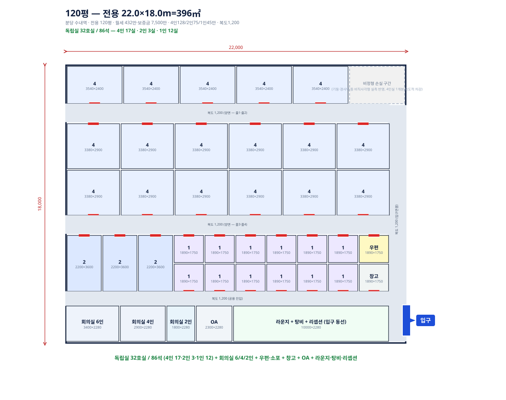
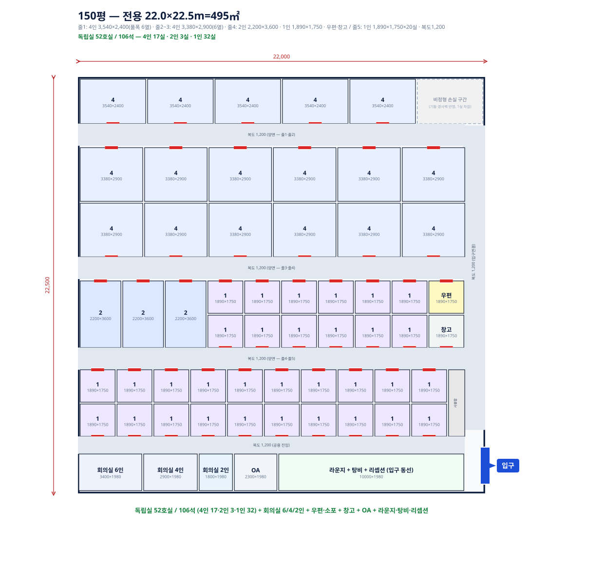

SOS 코워킹 최종보고서 (내부 종합본)
분당 120·150평 표준모델 · 판교 100평 1호점 참고 기준
1. 프로젝트 컨셉
| 구분 | SOS 모델 | 기존 공유오피스와 차이 |
|---|---|---|
| 상품 | 1·2·4인 소형 프로젝트룸. 최대 4인실 중심 | 대형 라운지·공용부 중심이 아니라 독립 소형호실 중심임 |
| 인원 | 5인실 이상 제외. 1~4인 소형팀만 대상 | 5인 이상은 기존 공유오피스 대형 호실이나 일반 사무실 직접 임차로 이동할 가능성이 높음. SOS는 1~4인 단기·소형 독립실 공백에 집중함 |
| 공간 | 전용 100~150평 전국모델. 100평은 소형·고단가형, 120~150평은 표준형 | 패스트파이브·스파크플러스보다 작은 면적으로 진입 가능함. 경쟁사는 최소 250~300평, 표준 350~500평급이 필요하지만 SOS는 100~150평으로 가능함 |
| 계약 | 1주 · 1개월 · 1년 운영 단, 1인 운영 효율화를 위해 1주 단기계약 비중은 제한 |
경쟁사 최소 3개월·6개월 계약 부담을 낮추되, 무제한 단기 운영이 아니라 1개월 이상 중심으로 입퇴실 빈도를 통제함 |
| 가격 | 합리적 인테리어, 1인 운영, 라운지·회의실 축소를 통한 합리적 가격정책 | 고급 공용부 비용을 줄이고 소형 독립실에 비용을 집중해 가격경쟁력을 확보함 |
| 확장 | 서울 외 수도권 업무권역 또는 지방 광역시 핵심권역 우선 | 작은 면적 진입과 낮은 고정비 구조로 패스트파이브·스파크플러스가 약한 지방/비서울권에서도 진입 가능함. 경쟁사 진입이 어려운 권역에서는 SOS가 소형 독립실 기준가격을 형성할 수 있음 |
핵심: 경쟁사는 최소 250~300평급 대형 지점이 필요하지만, SOS는 100평 소형·120~150평 표준 매물로 진입 가능한 1~4인 소형 프로젝트룸 전략임. 5인 이상은 경쟁사 또는 직접 임차 대안과 비교되므로 제외함
경쟁사 대비 SOS 특장점
| 항목 | 패스트파이브·스파크플러스 | SOS | 가격경쟁력으로 연결되는 이유 |
|---|---|---|---|
| 필요 면적 | 최소 250~300평, 표준 350~500평급 지점 구조 | 100~150평으로 진입 가능 | 대형 면적이 없어도 상품 구성이 가능해 매물 선택지가 넓고 고정비가 낮음 |
| 공간 구성 | 라운지·공용부·회의실 비중 큼. 5인 이상 대형 호실 선택지도 있음 | 1·2·4인 소형 독립실 중심. 5인 이상 제외 | 5인 이상은 경쟁사 또는 직접 임차와 비교되기 쉬워, SOS는 소형 프로젝트룸 수요에 집중함 |
| 인테리어 | 오픈천장, 고급 라운지, 브랜드형 마감 | 방음·기본 마감·가구·출입통제 중심 | 보여주기식 마감보다 실제 사용성과 방음에 투자함 |
| 운영 | 상주 서비스·상담 인력 중심 | 1인 운영 + 무인결제 + 출입 자동화 입퇴실 빈도 통제 전제 |
상담·결제 인력을 줄이되, 입실안내·퇴실점검·룸 세팅은 사람이 필요하므로 단기계약 비중을 제한함 |
| 가격정책 | 브랜드 프리미엄·공용부 비용 포함 | 소형팀 총액 부담을 낮춘 실속형 가격 | 단순 저가 판매가 아니라 비용 구조를 낮춰 합리적으로 책정함 |
| 가격 결정권 | 250~500평급 대형 지점이 성립하는 핵심권역 중심 | 경쟁사 공백 권역에서 1~4인실 기준가격 형성 가능 | 판교형 규제·중형 업무권역·지방 핵심권역에서는 단순 언더컷이 아니라 단가 상향 여지도 있음 |
2. 배치도 기준 모델 검산
| 모델 | 전용 | 월세 | 전용평당 월세 | 배치도 호실 | 룸 좌석 | 기준 점유율 | 기준 매출 | 월 고정비 | 기준 손익 | BEP | 운영 결론 |
|---|---|---|---|---|---|---|---|---|---|---|---|
| 분당 120평형 | 120평 | 432만 | 3.6만 432만 ÷ 120평 |
1인 12 / 2인 3 / 4인 18 | 90석 | 65% | 2,075만 | 1,655만 | +181만 | 58.6% | 주력 최소형. 흑자이나 호실 손실·추가 집행비에 민감함 |
| 분당 150평형 | 150평 | 560만 | 3.7만 560만 ÷ 150평 |
1인 32 / 2인 3 / 4인 18 | 110석 | 65% | 2,686만 | 2,133만 파트타임 120만 포함 |
+244만 | 58.3% | 주력 상한형. 1인+파트타임 전제, 120평보다 손익 버퍼 큼 |
| 판교 100평형 참고 | 104평 | 650만 | 6.25만 650만 ÷ 104평 |
1인 8 / 2인 4 / 4인 15 | 76석 | 60% | 2,244만 | 1,740만 | +246만 | 52.6% | 고단가·경쟁공백 권역에 적합한 100평형 모델임 |
기준은 폴더 내 평면도 SVG의 실제 배치 호실수임. 분당 120~150평형 가격안은 1인 47만 / 2인 78만 / 4인 133만, 판교 100평형은 1인 70만 / 2인 120만 / 4인 180만 기준임
배치도 기준 매출 세부
| 모델 | 1인실 매출 | 2인실 매출 | 4인실 매출 | 만실매출 | 검산 |
|---|---|---|---|---|---|
| 분당 120평형 | 564만 12실×47만 | 234만 3실×78만 | 2,394만 18실×133만 | 3,192만 | 564+234+2,394=3,192 |
| 분당 150평형 | 1,504만 32실×47만 | 234만 3실×78만 | 2,394만 18실×133만 | 4,132만 | 1,504+234+2,394=4,132 |
| 판교 100평형 참고 | 560만 8실×70만 | 480만 4실×120만 | 2,700만 15실×180만 | 3,740만 | 560+480+2,700=3,740 |
점유율별 손익 검산
| 모델 | 50% 손익 | 65% 손익 | 70% 손익 | BEP | 산식 |
|---|---|---|---|---|---|
| 분당 120평형 | -243만 | +181만 | +322만 | 58.6% | 매출×88.5% - 월고정비 1,655만 |
| 분당 150평형 | -305만 | +244만 | +427만 | 58.3% | 매출×88.5% - 월고정비 2,133만 |
| 판교 100평형 참고 | -85만 | +411만 | +577만 | 52.6% | 매출×88.5% - 월고정비 1,740만 |
3. 100평 소형 전국모델
| 지역 | 전용 | 전용평당 월세 | 실제 호실 구성 | 룸 좌석 | 가격안 | 60% 매출 | 월 고정비 | 안정기 손익 | 안정기 BEP | 운영 결론 |
|---|---|---|---|---|---|---|---|---|---|---|
| 판교 | 104평 | 6.25만 650만 ÷ 104평 |
1인 8 / 2인 4 / 4인 15 | 76석 | 1인 70 / 2인 120 / 4인 180 | 2,244만 | 1,740만 | +246만 | 52.6% | 소형 전국모델. 고단가·주변 규제로 경쟁 강도 낮음. 경쟁공백 권역에서 100평형도 출점 가능 |
100평형은 판교처럼 고단가·경쟁공백·규제형 권역에서 성립하는 소형 전국모델임. 이런 권역은 단순 저가 전략보다 1~4인실 단가 상향 여지가 있음. 표준 확장 기준은 120~150평, 100평은 고단가/경쟁공백 권역 중심으로 검토
4. 전국 평당월세 기준
| 전용평당 월세 | 진입 결론 | 진입 조건 |
|---|---|---|
| 5.0만 이하 | 1차 진입 | 전국 확장 기본 조건. 표준 가격으로도 BEP 방어 가능 |
| 5.0~5.5만 | 적극 검토 | 수도권·광역시 상급 업무권역까지 현실적으로 커버 가능한 구간 |
| 5.5~5.9만 | 조건부 검토 | 평면 효율이 좋고 지역 판매단가를 올릴 수 있을 때만 검토 |
| 6.0~6.9만 | 판교형 예외 | 규제로 인해 공유오피스 경쟁이 치열하지 않은 권역에서만 가능. 전국 표준모델로 보지 않음 |
| 7.0만 이상 | 원칙 제외 | 가격경쟁력과 BEP가 동시에 깨질 가능성이 큼 |
5. 100~150평 전국모델 기준
| 전용면적 | 모델 역할 | 예상 호실 | 예상 좌석 | 면적 운영 조건 |
|---|---|---|---|---|
| 100평 미만 | 원칙 제외 | - | - | 호실 수·공용부·라운지·운영 동선이 부족해 SOS 컨셉과 맞지 않음 |
| 100평 | 소형 전국모델 | 27실 | 76석 | 고단가·경쟁공백·규제형 권역에서 가능. 100평 미만은 제외 |
| 120평 | 주력 최소형 | 33실 | 90석 | 폴더 내 120평 SVG 기준. 흑자이나 호실 손실·추가 집행비에 민감 |
| 130평 | 중간형 | 33~45실 | 90~105석 | 매물 폭이 적으면 120평형과 150평형 사이 보정 모델로 검토 |
| 150평 | 주력 상한형 | 53실 | 110석 | 폴더 내 150평 SVG 기준. 1인 단독 운영은 비권장, 파트타임 보조 전제 |
모든 매물은 전용 100평 이상만 검토. 100평은 고단가·경쟁공백 권역 중심으로 보고, 실제 평면도에서 복도·입구·라운지·회의실·탕비·OA를 반영한 호실 수를 먼저 확정해야 함. 비정형 평면은 기준 호실에서 10~15% 감소 가능성을 별도 반영
1인 운영 가능 범위
| 운영 항목 | 120평형 | 130평형 | 150평형 | 운영 조건 |
|---|---|---|---|---|
| 예상 호실 | 33실 | 33~45실 | 53실 | 150평은 1인 단독 운영 상한 초과 |
| 예상 좌석 | 90석 | 90~105석 | 110석 | 좌석보다 호실 수와 입퇴실 건수가 부담 요인 |
| 운영 가능 여부 | 가능 | 가능 | 1인+파트타임 | 150평은 청소·쓰레기 외주, 온라인 결제, 출입 자동화, 민원 시스템, 파트타임 보조 전제 |
| 필수 조건 | 영업 전담 인력 미배치. 현장 담당 1명은 입실 안내, 퇴실 점검, 우편·소포, 시설점검, 민원 1차 대응만 수행. 150평은 입퇴실·점검 피크타임 파트타임 보조 월 120만 반영. 청소·쓰레기·정기 미화는 외부업체 일임 | 휴가·병가·야간 사고 대응용 백업 인력 필요 | ||
6. 경쟁사 공식 지점자료 기반 입점면적 역산
| 조사 항목 | 패스트파이브 | 스파크플러스 | SOS 비교 |
|---|---|---|---|
| 공식 지점 데이터 | 공식 지점맵 64개 지점 중 62개 지점에서 면적·층수 확인 | 공식 API 37개 지점에서 주소·사용층 확인. 30개 지점에서 라운지·회의실·세미나룸 등 공용시설 단서 확인 | SOS는 100~150평 단일 지점으로 설계. 대형 공용시설 최소화 |
| 패스트파이브 면적 분포 | 평균 589평 / 중앙값 410평 / 500평 이상 28개 300평 미만은 17개이나 32·70·89·100평 등 소형/특수 지점 포함 |
지점별 총면적 미공개. 다만 강남점은 공식 소개에 최대 600인 수용, 공용 라운지·회의실·세미나룸·이벤트홀 명시 | SOS 100~150평은 패스트파이브 평균의 약 20~25% 수준 |
| 대표 지점 사례 | 강남1 355평·5개층 / 강남2 800평·6개층 / 여의도 608평·4개층 / 판교 731평·1개층 / 서울숲 1,800평·11개층 | 강남점 16층 단독 사용, 최대 600인 수용 단서. 여의도점 파크원타워1 4층, 광화문점 D타워 B1층·라운지 B2층 | 경쟁사는 한 층 전체 또는 복수층 사용이 일반적. SOS는 100~150평 일부층·단일층 매물도 가능 |
| 최소 입점면적 추정 | 정식 공유오피스 지점은 300평 전후부터 현실적 패스트파이브 공식 지점 중 광화문·교대 300평, 강남1 355평, 삼성1 240평, 마곡 278평 확인 |
최소 250~300평급 이상으로 보는 것이 타당 라운지·회의실·세미나룸·이벤트홀·운영데스크 포함 시 120~150평은 정식 지점 구성이 어려움 |
SOS 전국모델 100~150평과 면적 요건이 다름. 이 차이가 지방·비서울권 진입 가능성의 핵심 |
패스트파이브 공식 지점 면적 샘플
| 지점 | 공식 공개 면적 | 사용 층수 | 주소 | 층당 평균 |
|---|---|---|---|---|
| 강남1호점 | 355평 | 5개층 | 강남구 역삼로3길 19 | 약 71평/층 |
| 강남2호점 | 800평 | 6개층 | 강남구 강남대로 364 | 약 133평/층 |
| 광화문점 | 300평 | 2개층 | 종로구 청계천로 11 | 약 150평/층 |
| 여의도점 | 608평 | 4개층 | 영등포구 국제금융로2길 17 | 약 152평/층 |
| 마곡점 | 278평 | 4개층 | 강서구 공항대로 337 | 약 70평/층 |
| 판교점 | 731평 | 1개층 | 경기 성남 분당구 대왕판교로 660 | 731평/층 |
| 서울숲점 | 1,800평 | 11개층 | 성동구 왕십리로 125 | 약 164평/층 |
스파크플러스 공식 주소·층 데이터 샘플
| 지점 | 공식 주소 | 사용층 | 면적 역산 단서 |
|---|---|---|---|
| 강남점 | 서울 서초구 강남대로 327 | 대륭서초타워 16층 | 최대 600인 수용, 공용 라운지·회의실·세미나룸·이벤트홀 명시 |
| 여의도점 | 서울 영등포구 여의대로 108 | 파크원타워1 4층 | 회의실·공용시설 포함 지점. 별도 계약서에서 2·5·8인실 운영 확인 |
| 광화문점 | 서울 종로구 종로3길 17 | D타워 B1층, 라운지 B2층 | 복수층 사용. 라운지 층을 별도 운영 |
| 선릉점 | 서울 강남구 테헤란로 415 | L7 HOTEL 강남타워 2층 | 최대 80인 수용 단서, 공용시설 명시 |
| 강남4호점 | 서울 서초구 서초대로77길 17 | BLOCK77 11층 | 최대 18인 단서. 소형 지점도 공용시설을 붙여 운영 |
주소 기반 추가 검증 방식
| 확인 단계 | 확인 내용 | 면적 산정 방식 |
|---|---|---|
| 1단계 | 지점 주소와 사용 층 확인 | 공식 지점 주소, 계약서, 제안서, 네이버지도/건물 안내 기준으로 층수 확인 |
| 2단계 | 해당 건물 층별 면적 확인 | 건축물대장 또는 임대 매물의 층별 계약/전용면적 확인 |
| 3단계 | 복수층 사용 시 면적 합산 | 1개층 전체 사용이면 해당 층 면적, 2~3개층 사용이면 층별 면적 합계로 지점 면적 추정 |
근거: 패스트파이브 공식 지점맵의 64개 지점 중 면적 확인 62개, 스파크플러스 공식 지점 API 37개 주소·층 데이터. 스파크플러스는 지점별 총면적을 공개하지 않아, 사용층과 공용시설·최대 수용인원 단서로 250~300평 이상 필요하다고 보수 추정. 실제 지점별 총면적은 건축물대장 층별 면적 확인 시 보강 가능
7. 전국 후보권역
| 권역 | 매물 필터 | 권역 결론 | 검토 사유 |
|---|---|---|---|
| 분당·수내·정자 | 전용평당 5만 이하 | 우선 검토 | 임대료 안정. 단, 실제 배치 효율이 낮으면 수익이 얇아지는 구조 |
| 광교·송도·마곡 | 전용평당 5.5만 이하 | 적극 검토 | 수도권 확장 핵심 후보. 120~150평 매물 우선 |
| 가산·구디·상암 | 전용평당 5만 이하 | 우선 검토 | 서울 내 저가 업무권역 테스트 가능 |
| 부산 센텀·해운대 | 전용평당 5.5만 이하 | 전국 확장 후보 | 광역시 중 업무수요가 가장 뚜렷한 축. 경쟁사 공백 활용 가능 |
| 대전 둔산 | 전용평당 5만 이하 | 전국 확장 후보 | 행정·전문직·프로젝트 수요 검토 가능 |
| 대구 범어·수성 | 전용평당 5만 이하 | 검토 후보 | 지방 핵심권역. 수요 밀도와 실제 매물 가격 확인 필요 |
| 판교 | 120평 이상 + 6만대 | 규제형 예외 | 주변 규제로 공유오피스 경쟁이 치열하지 않은 경우에만 검토. 100평형은 1호점 참고 |
8. 비용·가격 산식
| 비용 항목 | 적용 기준 | 검증 판단 |
|---|---|---|
| 월 고정비 | 월세 + 관리비 + 전기·냉난방 + 청소 + 운영잡비 + 현장담당 인건비 + 초기투자비 월상각 | 마케팅은 변동비로 분리함. 1인 운영 인건비는 반드시 별도 반영 |
| 변동비 | 매출 11.5% = 마케팅 7% + PG·플랫폼·환불 4.5% | 한 줄 합산 금지. 손익표에는 마케팅과 결제비를 분리 표시 |
| 마케팅 | 매출 7% | 검색광고·지역광고·제휴비 가정. 채널별 실제 CPA 확인 전까지 보수 가정 |
| BEP 점유율 | 월 고정비 ÷ (만실매출 × 88.5%) | 88.5% = 매출 - 마케팅 7% - PG·플랫폼·환불 4.5% |
| 초기투자비 | 인테리어·방음 150만/평, 전기·통신 11만/평, 도어락 25만/룸, 보안 공용 800만, 가구 23.65만/석, 탕비·제빙기 50만, 예비비 5% | 공개가 검증 가능 항목은 장비뿐임. 인테리어·전기·소방·공조는 후보지별 견적 필수 |
| 운영 | 100~130평은 1인 운영, 150평은 1인+파트타임 보조. 온라인 결제, 출입 자동화, 청소·쓰레기 외주 | 청소 외주는 공용부 정기미화 기준. 개별 룸 입퇴실 청소비는 별도 확인 필요 |
비용 항목별 검증표
| 항목 | 현재 적용값 | 공개가·검증 근거 | 판단 |
|---|---|---|---|
| 인테리어·방음 | 150만/평 | 공개 쇼핑가로 검증 불가. 소형 독립실은 벽체·문·소방·공조 물량이 많아 후보지 견적 필요 | 130만/평은 과소 가능. 150만/평으로 보수 반영 |
| 전기·통신 | 11만/평 | 룸별 콘센트, 랜, AP, 분전 보강은 공사견적 항목 | 공개가 검증 불가. 후보지 전기용량·분전반 상태 확인 필요 |
| 도어락 | 25만/룸 | SSG 검색 노출가 약 19.1~21.8만. 설치·관리 여지 포함 | 25만/룸은 보수 범위 |
| 보안 공용 | 800만 정액 | SSG CCTV 8채널 NVR 세트 약 72.3~77.4만은 장비가 기준. 설치·배선·출입관리 연동 별도 | 장비가만 보면 높음. 무인운영 설치 포함 견적을 받아야 확정 |
| 가구 | 23.65만/석 | SSG 책상 약 14.2~17.7만, 의자 약 13.5~17.9만. 책상+의자 단순합은 27.7만 이상 | 23.65만/석은 낮음. 벌크구매 견적 없으면 과소 가능 |
| 탕비·제빙기 | 50만 정액 | SSG 제빙기 검색 노출가 약 9.1~21.9만, 상위 모델 50만대 존재 | 50만은 사무실용으로 무리 없는 보수값 |
| 청소 | 0.7만/평 | 공용부 정기미화 기준 내부 가정. 개별 룸 입퇴실 청소는 미포함 | 외주 견적 필수. 단기계약 비중이 높으면 추가비 발생 |
| 운영잡비 | 월 22만 | 인터넷 4 + 복합기 4 + 정수기 3 + CCTV보안 8 + 화재보험 3 | 항목별 계약 전까지 추정값. 과대계상 방지를 위해 세부 합산 |
| 현장담당 인건비 | 월 280만 | 1인 운영 전제의 핵심 고정비 | 제외 시 BEP가 과도하게 개선되어 보일 수 있어 반드시 반영 |
| 마케팅 | 매출 7% | 초기 고정 집행비는 별도 예산. 월 손익은 매출비례로 반영 | CPA·전환율 확인 전까지 가정값 |
9. 초기투자금·매출·비용 세부
초기투자금
| 투자 항목 | 분당 120평형 | 분당 150평형 | 판교 100평형 참고 |
|---|---|---|---|
| 전용 / 호실 / 좌석 | 120평 / 33실 / 90석 | 150평 / 53실 / 110석 | 104평 / 27실 / 76석 |
| 인테리어·방음 | 18,000만 150만/평 | 22,500만 150만/평 | 15,600만 150만/평 |
| 전기·통신 | 1,320만 11만/평 | 1,650만 11만/평 | 1,144만 11만/평 |
| 출입통제·CCTV | 1,625만 도어락 33실×25만 + 보안공용 800만 | 2,125만 도어락 53실×25만 + 보안공용 800만 | 1,475만 도어락 27실×25만 + 보안공용 800만 |
| 가구 | 2,129만 90석×23.65만 | 2,602만 110석×23.65만 | 1,797만 76석×23.65만 |
| 탕비 비품·제빙기 | 50만 탕비 비품 + 제빙기 1대 | 50만 탕비 비품 + 제빙기 1대 | 50만 탕비 비품 + 제빙기 1대 |
| 예비비 5% | 1,155만 | 1,446만 | 1,003만 |
| 초기투자금 합계 | 24,280만 | 30,373만 | 21,070만 |
| 월상각 | 405만 60개월 | 506만 60개월 | 351만 60개월 |
월 고정비
| 월 비용 항목 | 분당 120평형 | 분당 150평형 | 판교 100평형 참고 |
|---|---|---|---|
| 월세 | 432만 | 560만 | 650만 |
| 관리비 | 336만 120평×2.8만 | 420만 150평×2.8만 | 281만 104평×2.7만 |
| 전기·냉난방 | 96만 120평×0.8만 | 120만 150평×0.8만 | 83만 104평×0.8만 |
| 청소 | 84만 120평×0.7만 | 105만 150평×0.7만 | 73만 104평×0.7만 |
| 운영잡비 | 22만 인터넷4+복합기4+정수기3+CCTV8+보험3 | 22만 인터넷4+복합기4+정수기3+CCTV8+보험3 | 22만 인터넷4+복합기4+정수기3+CCTV8+보험3 |
| 현장담당 인건비 | 280만 | 280만 | 280만 |
| 파트타임 보조 | - | 120만 | - |
| 초기투자 월상각 | 405만 | 506만 | 351만 |
| 월 고정비 합계 | 1,655만 | 2,133만 | 1,740만 |
매출·BEP 검산
| 검산 항목 | 분당 120평형 | 분당 150평형 | 판교 100평형 참고 |
|---|---|---|---|
| 만실 월매출 | 3,192만 1인12×47 + 2인3×78 + 4인18×133 | 4,132만 1인32×47 + 2인3×78 + 4인18×133 | 3,740만 1인8×70 + 2인4×120 + 4인15×180 |
| 보고 기준 점유율 | 65% | 65% | 60% |
| 기준 매출 | 2,075만 | 2,686만 | 2,244만 |
| 마케팅 7% | 145만 2,075만×7% | 188만 2,686만×7% | 157만 2,244만×7% |
| PG·플랫폼·환불 4.5% | 93만 2,075만×4.5% | 121만 2,686만×4.5% | 101만 2,244만×4.5% |
| 변동비 합계 11.5% | 239만 | 309만 | 258만 |
| 초기 추가 집행비 | 별도 예산 | 별도 예산 | 별도 예산 |
| 중기 추가 집행비 | 별도 예산 | 별도 예산 | 별도 예산 |
| 월 고정비 | 1,655만 | 2,133만 | 1,740만 |
| 기준 월손익 | +181만 | +244만 | +246만 |
| BEP | 58.6% | 58.3% | 52.6% |
| 70% 월손익 | +322만 | +427만 | +577만 |
비정형 평면 보정
| 모델 | 기준 호실 | 호실 손실 | 보정 후 호실 | 안정기 65% 손익 | 안정기 BEP |
|---|---|---|---|---|---|
| 120평형 | 33실 | -1실 | 32실 | +126만 | 60% |
| 120평형 | 33실 | -2실 | 31실 | +70만 | 62% |
| 120평형 | 33실 | -3실 | 30실 | +14만 | 65% |
| 120평형 | 33실 | -5실 | 28실 | -97만 | 69% |
| 150평형 | 53실 | -1실 | 52실 | +199만 | 59% |
| 150평형 | 53실 | -3실 | 50실 | +109만 | 62% |
| 150평형 | 53실 | -5실 | 48실 | +20만 | 64% |
| 150평형 | 53실 | -8실 | 45실 | -115만 | 69% |
보정 기준: 손실 호실은 해당 모델의 평균 호실 매출로 산정. 변동비 11.5% 기준. 직사각형 SVG 기준이므로 실제 매물은 10~15% 손실을 하한으로 검토. 실제 검토 시 빠지는 호실이 1인실인지 4인실인지에 따라 재계산 필요
전용평당 손익
| 모델 | 전용 | 기준 매출/평 | 고정비/평 | 월손익/평 |
|---|---|---|---|---|
| 분당 120평형 | 120평 | 17.3만 | 13.8만 | 1.5만 |
| 분당 150평형 | 150평 | 17.9만 | 14.2만 | 1.6만 |
| 판교 100평형 | 104평 | 21.6만 | 16.7만 | 2.4만 |
10. 추가 검증 리스크
공간 효율성 검증
| 모델 | 독립실 구성 | 최소 룸 면적 | 전용 대비 룸 면적 | 판단 |
|---|---|---|---|---|
| 100평 소형 | 1인 8 / 2인 4 / 4인 15 | 약 70.1평 | 70.1% | 100평 소형 전국모델. 고단가·경쟁공백 권역에서 검토 |
| 120평형 | 1인 12 / 2인 3 / 4인 18 | 약 83.4평 | 69.5% | 룸 면적 비중이 높음. 실제 매물에서 기둥·샤프트·벽체 손실 발생 시 손익 취약 |
| 150평형 | 1인 32 / 2인 3 / 4인 18 | 약 107.4평 | 71.6% | 독립실 밀도가 높음. 10~15% 손실은 기본, 비정형 매물은 20% 손실도 검토 필요 |
최소 룸 면적 가정: 1인실 1.2평, 2인실 2.0평, 4인실 3.5평. 여기에 복도, 벽체 두께, 탕비, 라운지, 회의실, 소방·공조 설비 공간이 추가로 필요함
사업성 리스크 점검
| 리스크 | 현재 모델 가정 | 추가 검증 필요 사항 | 보고 판단 |
|---|---|---|---|
| 벽체·복도 손실 | 직사각형 SVG 기준 33~53실 | 실제 후보 매물 도면으로 벽체 두께, 기둥, 코어, 창 없는 구간 반영 | 10~15% 손실은 기본. 20% 손실 시 120평형은 원칙 제외 가능성 큼 |
| 소방·공조 | 인테리어·방음 150만/평, 전기·통신 11만/평 | 개별 실 스프링클러, 감지기, 시각경보기, 디퓨저, 덕트 소음 차단 필요 여부 확인 | 소방·공조 견적 전에는 CAPEX 확정 불가. 후보지별 가견적 필수 |
| CAPEX 과소 가능성 | 인터넷 공개가 반영 기준 약 178~179만/평 수준 | 소형실 다수 구조는 도어, 전기, 공조, 방음 물량이 증가함 | 200만/평 보수 민감도 병행 필요. 250만/평 이상이면 가격 또는 호실 재조정 필요 |
| 단기계약 운영부하 | 1주·1개월·1년 운영, 1인 운영 + 온라인 결제 | 투어, 입실 안내, 퇴실 점검, 비밀번호 발급·회수, 개별 룸 청소·세팅, 민원, 시설 점검 업무량 확인 | 단기계약 비중이 높으면 입퇴실 정비 공수가 급증함. 1주 계약은 제한하고 1개월 이상 중심으로 운영해야 함 |
| 입퇴실 청소비 | 정기 청소·쓰레기는 외주 전제 | 복도·라운지 정기미화와 별도로 개별 룸 입퇴실 청소비가 발생하는지 확인 | 120평형은 호실 손실 -3실부터 적자라, 입퇴실 청소 외주비가 반복되면 즉시 적자 가능 |
| 단기계약 비중 | 1주 상품은 수요 흡수용 옵션 | 전체 호실 중 1주 계약 허용 비중과 월 입퇴실 건수 상한 설정 | 1인 무인화 효율을 유지하려면 1주 계약은 제한 판매하고, 1개월·3개월 이상 계약을 기본으로 잡아야 함 |
| BEP 방어력 | 120평 BEP 58.6%, 150평 BEP 58.3% | 비수기, 수리비, 공실, 호실 손실 반영 후에도 월 손익이 남는지 확인 | 120평은 호실 손실과 입퇴실 비용에 민감함. 150평은 파트타임을 넣어도 120평보다 BEP가 낮아 표준 확장에 더 유리 |
| 초기 입주율 | 65% 기준 검증 | 초기 3개월 사전예약, 제휴 채널, 프로젝트팀 대상 마케팅, 기존 고객 전환 가능성 확인 | 오픈 초기 추가 집행비는 별도 예산으로 관리. 오픈 전 선계약률 목표와 단기계약 비중 상한 필요 |
추가 검증 결론: 모델 자체는 성립 가능하나, 숫자는 직사각형 최적 배치 기준임. 실제 후보지는 건축도면, 소방·공조 가견적, CAPEX 견적, 호실 손실률을 먼저 확인한 뒤 BEP를 재산정해야 함
11. 매물 체크리스트
| 확인 항목 | 통과 조건 |
|---|---|
| 전용평당 월세 | 5.5만 이하 우선. 5.5~5.9만은 조건부, 6만 이상은 판교형 예외 |
| 전용면적 | 100~150평 전국모델. 100평 미만은 원칙 제외. 100평은 고단가·경쟁공백 권역 중심 |
| 실제 호실 수 | 100평 27실, 120평 33실, 150평 53실 기준. 폴더 내 평면도 기준으로 검증 |
| 평면 형상 | 완전 직사각형 기준 산정 금지. 코어·기둥·꺾인 외벽·창 없는 구간 반영 후 호실 1~5개 손실 민감도 검토 |
| 동선 | 전 호실 출입 가능한 복도 확보. 입구, 우편·소포, 탕비, 소형 라운지 반영 |
| 계약 조건 | 권리금 없는 매물 우선. 공유오피스·공간임대 운영 가능 여부는 계약 전 확인 |
| 검토 순서 | 전용평당 월세 → 실제 평면 배치 → 호실 수 → 만실 매출 → BEP 순서로 검토 |
12. 최종 판단
| 검토 항목 | 보고 결론 |
|---|---|
| 전국 확장 기준 | 100~150평 전국모델은 전용평당 월세 5만원대까지 가능함. 단, 실제 도면·소방·공조·CAPEX 가견적 통과가 전제임. 5.5만 이하 적극 검토, 5.5~5.9만 조건부 검토, 6만 이상은 규제로 경쟁이 치열하지 않은 권역만 예외 |
| 핵심 수익 기준 | 평수가 아니라 전용평당 매출 - 전용평당 비용. 면적이 넓어도 지역 단가가 낮거나 실제 호실 수가 적으면 손익이 낮아지는 구조임 |
| 검증 지역 | 100평형도 소형 전국모델로 포함. 단, 100평은 고단가·경쟁공백 권역 중심으로 검토하고, 120~150평은 표준형으로 검토. 120평형은 호실 손실과 추가 집행비에 민감해 실제 매물에서 호실 손실이 크면 제외 또는 가격 보정 필요 |
| 경쟁사 면적 장벽 | 패스트파이브·스파크플러스는 라운지·미팅룸·폰부스·리셉션·OA 등 서비스 면적이 커서 최소 전용 250~300평, 표준 전용 350~500평급이 필요함. SOS는 100~150평으로 진입 가능해 지방·비서울권 매물 풀이 넓고, 경쟁사 공백 권역에서는 소형 독립실 가격 기준을 선점할 수 있음 |
전국 확장 공식: 경쟁사 최소 250~300평 대비 SOS 100~150평 진입 + 전용평당 월세 5만원대 + 실제 27~53호실 + 합리적 인테리어. 경쟁사 공백 권역에서는 1~4인실 단가 상향도 가능함. 단, 1인 운영 효율을 위해 1주 단기계약 비중은 통제해야 함. 100~130평은 1인 운영, 150평은 1인+파트타임 보조 기준. 실제 매물은 직사각형이 아니므로 호실 10~15% 손실을 기본 반영하고, 비정형 매물은 20% 손실까지 검토. 100평 미만은 SOS 컨셉에서 제외
경쟁공백권역 프리미엄 민감도
| 권역 유형 | 가격(4인/2인/1인) | 만실매출 | BEP | 비고 |
|---|---|---|---|---|
| 분당(경쟁사 있음, 표준가) | 133/78/47만 | 3,192만 | 58.6% | 변동비 11.5% 기준 |
| 경쟁공백 +10% | 146/86/52만 | 3,511만 | 53.3% | 지방 핵심권역 최소 가정 |
| 경쟁공백 +15% | 153/90/54만 | 3,671만 | 50.9% | 지방 핵심권역 표준 가정 |
| 경쟁공백 +20% | 160/94/56만 | 3,830만 | 48.8% | |
| 경쟁공백 +25% | 166/98/59만 | 3,990만 | 46.8% | |
| 판교(경쟁제한, 프리미엄 적용) | 180/120/70만 | 4,440만 | 42.1% | FF 판교 정가·추정가 기준 참고 |
기준: 120평형 도면(33실/90석) 고정, 가격만 변동. 경쟁공백 10~15%만 확보해도 BEP가 58.6%→50.9~53.3%로 5~8%p 개선 — 호실 손실 몇 개보다 지역 선택(진입권역)이 BEP에 더 큰 영향을 줌. 단, 이 프리미엄율(10~25%)은 추가 실사 전제의 가정치임. 판교는 FF 정가 및 할인 추정가 기준으로 참고하고, 부산·대전·대구 등은 경쟁사 가격 미확보 상태라 실사 전 확정 불가
13. 평형별 평면도
인쇄용 첨부: 아래 평면도는 현재 수익모델 산식의 기준이 되는 배치도임. 실제 매물 검토 시에는 이 도면을 그대로 적용하지 않고, 후보지 실측 도면의 기둥·코어·샤프트·창 위치를 반영해 호실 수와 BEP를 재산정해야 함
100평 소형 전국모델

기준: 27실 / 76석 / 4인 15실 · 2인 4실 · 1인 8실. 고단가·경쟁공백 권역 중심 검토
120평 표준 최소형

기준: 33실 / 90석 / 4인 18실 · 2인 3실 · 1인 12실. 65% 기준 손익 버퍼가 얇아 실매물 손실률 확인 필수
150평 표준 상한형

기준: 53실 / 110석 / 4인 18실 · 2인 3실 · 1인 32실. 1인+파트타임 보조 운영 전제